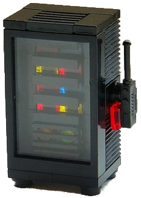
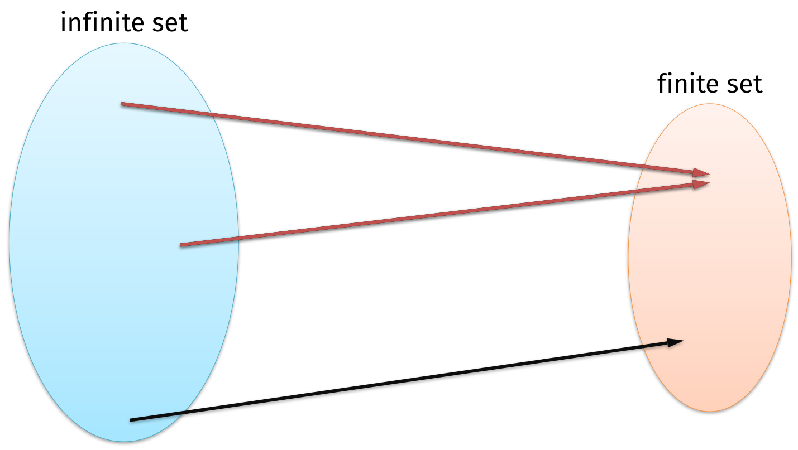
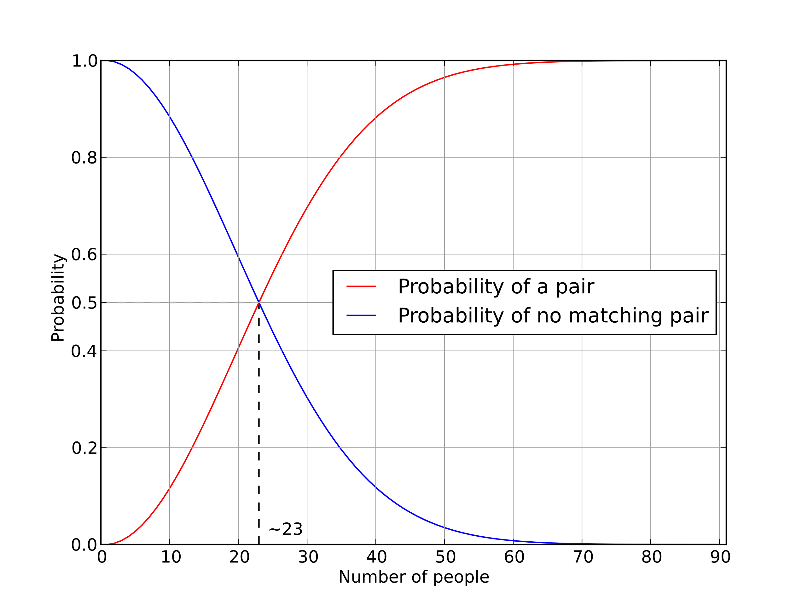

{kind=link}
# install PyNaCl with "pip install pynacl"
import nacl.hash
sha256 = lambda message: nacl.hash.sha256(message, encoder=nacl.encoding.HexEncoder)
print(sha256(b'Hello world!'))b'c0535e4be2b79ffd93291305436bf889314e4a3faec05ecffcbb7df31ad9e51a'Lectures in this class contain interactive multiple-choice questions. You must display your card with the intended response side facing up, and without covering the QR code.
Privacy note: neither I nor the plickers.com website save any pictures of students. All camera processing takes place on my phone, and only your QR code results are sent to the website.
Let’s try an example.
Interactive question. How would you rate this course so far?
By the end of today’s lecture, you will learn:
“Cryptography is how people get things done when they need one another, don’t fully trust one another, and have adversaries actively trying to screw things up.”
– Ben Adida
Cryptography uses math, computer science, and data science to design systems that help people to get things done safely in the digital world.
Computers represent data in bits and bytes. We can observe this data in many formats like binary, int, hex, and base64. As we will see today, cryptographic tools can be very precise when considering how data is represented.
The cryptographic tools we will design over the course of the semester fall into two categories:

Today, we will study a special function – called a cryptographic hash function – that is used as a building block within many crypto primitives and protocols.
To motivate today’s discussion, let’s consider the following problem:
| Alice | Cloud service | |
|---|---|---|

|
\(\quad \Longleftrightarrow \quad\) |
 |
Interactive question. What kind of security objective does Alice want?
Answer. Alice wants to be able to detect if the cloud service provider tampers with her file \(x\).
How can we design the cloud storage service in a way that guarantees integrity to Alice? What would be great is if there was a function \(H\) that we could apply to the file \(x\) that:
Producing a small output—say, of \(n\) bits—is easy to do. We could:
Question. What could go wrong with these functions?
Answer. All of them allow the cloud provider to cheat by revealing a different file with the same \(n\)-bit prefix, or sum, or image after the linear transformation.
Depending on the file type and format, it might be the case that we get lucky. For instance, maybe \(x\) is the only file in the world that maps to the fingerprint \(H(x)\).
But in cryptography, we are not in the business of relying on luck. Instead, let’s make our own luck.
Recall that our goal is to “compress” a large image \(x\) into a small (say, constant-sized) output \(y = H(x)\) while making sure that Alice doesn’t change the image afterward.
Because \(H\) has infinitely many inputs and only finitely many outputs, it must be the case that there are collisions – that is, two inputs that map to the same output string.
But: we are going to insist that collisions are computationally infeasible to find. This guarantee should hold even if we give the code of \(H\) to our adversary. This property is called collision resistance.

Here is our adversary in this course. Her name is Mallory, because she is malicious and doesn’t follow the rules of any crypto protocol.
Mallory is intended to be a stand-in for any kind of real-world adversary who you might be concerned about: your cloud provider, internet service provider, government, or anyone else who might want to ruin your day.
“Anyone, from the most clueless amateur to the best cryptographer, can create an algorithm that he himself can’t break.”
– Bruce Schneier
Even though Mallory is mathematically savvy and computationally powerful, we insist that she must still not be able to “break” our function \(H\).
Often called a cryptographer’s Swiss Army knife, a hash function can underlie many different cryptographic schemes: aside from producing a document’s digest to be digitally signed—one of the most common applications.
Let us give example applications: code-signing systems, computer forensics, [and protecting] passwords.
– Aumasson, Meier, Phan, and Henzen, The Hash Function BLAKE.
A cryptographic hash function, which we typically denote by \(H\), has two seemingly-contradictory requirements.
You can think of a hash function as a gigantic function that translates between two languages:
Moreover, the outputs have a fixed, known length, no matter how short or long the input messages are. As a toy example: the following truth table was produced by mapping the top 3000 English words to random 4-letter strings using random.org.
| Input | Output |
|---|---|
| abandon | nieh |
| ability | btol |
| able | ykwf |
| about | fkay |
| \(\vdots\) | \(\vdots\) |
| zipper | jgxm |
| zone | pnjo |
| zoo | ansm |
While this toy example used English-language words as the possible inputs, in reality we want a hash function to accept any data type.
bytestrings (as discussed in Lab 1)Whenever we study a new crypto primitive in this course, I will define precisely its API. A cryptographic hash has a simple interface: a single mathematical function that can only be run in the forward direction.
Definition 2.1 (Cryptographic hash function) A hash function \(H: \{0, 1\}^* \to \{0, 1\}^n\) is an efficiently-computable function that
Note that there is nothing hidden or secret here: the code of \(H\) is public knowledge and anyone can compute it.
The output \(H(x)\) is often called the hash digest corresponding to the input \(x\).
For example, here is some Python code for a popular cryptographic hash function called SHA-256, which has an output length of 256 bits.
# install PyNaCl with "pip install pynacl"
import nacl.hash
sha256 = lambda message: nacl.hash.sha256(message, encoder=nacl.encoding.HexEncoder)
print(sha256(b'Hello world!'))b'c0535e4be2b79ffd93291305436bf889314e4a3faec05ecffcbb7df31ad9e51a'A hash function is deterministic: if you feed in the same input twice, you will get the same output twice.
print(sha256(b'Hello world!'))b'c0535e4be2b79ffd93291305436bf889314e4a3faec05ecffcbb7df31ad9e51a'Small changes to the input of the hash function cause substantial changes to the output.
message = b'Hello world?'
print(sha256(message))b'43f497ee7ac09843d631362ef9aca26a0cab437acaea8a98e44afa7ad65a2d41'Taking the hash of a message vs. the hex-encoding of a message produces very different results!
from binascii import hexlify
hexMessage = hexlify(message)
hexDigest = sha256(hexMessage)
print(hexDigest)b'9c55c598e927c2ba0096d166f39c539cad2b0a3210dadf81a5bc9638681af1d5'For this reason, I recommend using variable names that explicitly identify whether a variable contains raw bytes or a hex encoding.
As the name suggests, SHA-256 has an output length of 256 bits, or 32 bytes. The output is represented using 64 hex characters, since each hex character encodes 4 bits of data.
print(len(hexDigest))64The input to the hash function can be any size. No matter what: the output length is always 256 bits, i.e., 64 hex characters.
print(len(sha256(b'A')))64print(len(sha256(b'It was the best of times, it was the worst of times, it was the age of wisdom, \
it was the age of foolishness, it was the epoch of belief, it was the epoch of \
incredulity, it was the season of light, it was the season of darkness, it was \
the spring of hope, it was the winter of despair.')))64Next, we need to specify precisely the problem that Mallory cannot break. In fact we will define multiple such problems. As we go down the list:
Definition 2.2 (Hash function requirements) A cryptographic hash function \(H\) achieves the following security properties.
Collision resistance: it is practically infeasible for Mallory to find two different inputs \(x_1\) and \(x_2\) such that \(H(x_1) = H(x_2)\).
(Note: if a function is collision resistant then it must be one-way, but the converse is not necessarily true. Think about why that is?)
Puzzle friendliness: (this property is complicated to describe; we will come back to it later)
Random oracle: \(H\) acts like a randomly-generated truth table would.
If an adversary [Mallory] has not explicitly queried the oracle on some point \(x\), then the value of \(H(x)\) is completely random… at least as far as [Mallory] is concerned.
– Jon Katz and Yehuda Lindell, Introduction to Modern Cryptography
Interactive question. Which security requirement of a cryptographic hash function ensures that no one can invert the output of a hash function to recover a corresponding input?
Note that there is a limit to how infeasible it is to find a collision.
So if Mallory has enough time and computing power, it must be possible to find a collision.
Exactly how difficult can we hope that the problem might be? That is, even with the best possible hash function, what is a blunt and brute force attack that will always succeed?
Let’s step away from hash functions for a moment, and look at a seemingly-unrelated question. Let \(K\) be the number of people in this classroom.
Interactive question. Approximately what is the probability that two people in this room have the same birthday?
(For the purpose of this question, suppose that everyone’s birthday is sampled uniformly at random from the set of 366 possible choices. This is not a valid assumption for many reasons, e.g., leap years, but let’s go with it for now.)
It might intuitively seem like the answer should be \(\frac{K}{366}\).
But that is incorrect! It would be the answer to a different problem:
What is the probability that at least one of \(K\) students in this classroom has the same birthday as Prof. Varia does?
The distinction between these two questions (and their corresponding answers) is called the birthday paradox.
The answer to the original question depends on the number of pairs of people in the classroom.
So the answer to the question is closer to \({K \choose 2} / 366 \approx K^2 / (2 \cdot 366)\) than it is to \(K / 366\).
But \({K \choose 2} / 366\) is not exactly right either. The reason is the principle of inclusion-exclusion: we would be overcounting in scenarios where many people have the same birthday.
Instead, it is easier to think about the opposite problem. Suppose \(K = 23\), and let’s imagine that the \(K\) people walk into the classroom, one at a time.
What is the probability that all of them have different birthdays?
As a result, the overall probability that everybody’s birthday is distinct is small:
\[ 1 \times \frac{365}{366} \times \frac{364}{366} \times \cdots \times \frac{344}{366}\]
We can calculate this expression using Python.
import math
math.prod(range(344,367)) / (366**23)0.49367698818054007The punchline is: if there are 23 people in the classroom, then it is more likely than not that two of us have the same birthday!
Here’s a graph that shows the probability of two people having the same birthday in a room of \(K\) people.

Generalizing from the specific case of birthdays (where there are \(N = 366\) options): when drawing with replacement from a set of size \(N\), then:
\[ E[\text{\# of attempts until the first collision}] \approx 1.25 \sqrt{N}.\]
This approximation works well even for fairly small choices of \(N\), such as \(N = 366\). And it works really well for larger \(N\).
import math
1.25 * math.sqrt(366)23.91390808713624Moreover, the distribution is tightly correlated around this expected value. There is less than a 15% chance that:
The key insight from the birthday problem is that:
The best-possible security that we can hope for a hash function \(H: \{0, 1\}^* \to \{0, 1\}^n\) to achieve is related to the length of the output space \(n\).
Example. Suppose that we build a hash function whose output length is \(n = 3\) bits. Let’s try to break one-wayness and collision resistance using a simple guess-and-check approach.
To break one-wayness for (say) \(y = 000\), suppose we just select inputs \(x\) at random and compute the hash function until we find an input where \(H(x) = y\).
Now let’s try to break collision resistance. Once again, suppose that we aimlessly select inputs \(x\) at random and build a table of all \((x, H(x))\) pairs until we find two inputs with the same digest.
So in order to have a secure hash function, it is necessary (though not sufficient) to choose a large number of possible outputs \(N\). A common choice in cryptography is to choose an output length of \(n = 256\) bits, so that \(N = 2^{256}\).
Extrapolating from the analysis above, our brute-force attack succeeds at breaking:
These are both big numbers.
In fact, both of them are so big as to be practically impossible for anyone to execute, with the computing power available today or in the near future.
But do note that they are different scales of big-ness. Remember that \(2^{256}\) is not two times as big as \(2^{128}\). It is instead \(2^{128}\) times as big!
To give a sense of how big the number \(2^{128}\) is:
This calculation discounts the effect of Moore’s law. Nevertheless, it shows the vast computing power required to break collision resistance.
The number \(2^{256}\) is much, much larger than this. As we discussed last time: even running a for loop over \(2^{256}\) possible preimages would require (a) more time than the expected remaining length of the universe and (b) approximately as much energy as the sun.
So far, we have talked about the best-possible security that a hash function can hope to achieve.
For today, let’s return to the outsourced cloud example from the beginning of the lecture. Recall that:
Question. How can Alice do this?
Answer. Here is one common approach:
This approach is both simple and secure.
Question. What if Alice wants to upload many files \(f_1, f_2, \ldots, f_k\) to the cloud?
There is a better approach: before uploading the files, Alice can construct a Merkle tree (named after Ralph Merkle).

The nice part about Merkle trees is that:
To construct a proof that (for example) a claimed file \(f_3^*\) is in the set, the cloud provider Mallory sends the following \(\log(k)\) hash digests to Alice.

To test whether the received file \(f_3^*\) is correct, Alice can “fill in the blanks” of the path of the Merkle tree from the leaf up to the root.
\[\begin{align} h_{3}^* &= H(f_3^*) \\ h_{3,4}^* &= H(h_3^*,h_4^*) \\ h_{1,4}^* &= H(h_{1,2}^*,h_{3, 4}^*) \\ h_{1,8}^* &= H(h_{1,4}^*,h_{5,8}^*) \\ \end{align}\]
Remember that the real file \(f_3\) contributed toward \(\log(k)\) hash digests. For instance, if we “trace” the path of the file \(f_3\), here are all of the variables that it influenced.
\[\begin{align*} h_{3} &= H(f_3) \\ h_{3,4} &= H(h_3,h_4) \\ h_{1,4} &= H(h_{1,2},h_{3, 4}) \\ h_{1,8} &= H(h_{1,4},h_{5,8}) \\ \end{align*}\]
Because Alice has stored \(h_{1,8}\), she can test whether \(h_{1,8}^* = h_{1,8}\). If this equality holds, then we can use the collision resistance property to deduce that:
from the final equation, \(h_{1,4}^* = h_{1,4}\) and \(h_{5,8}^* = h_{5,8}\)
then from the second-to-last equation, \(h_{1,2}^* = h_{1,2}\) and \(h_{3,4}^* = h_{3,4}\)
…and so on, until eventually the first equation tells us that \(f_3 = f_3^*\), as desired!
In this way: hash functions provide a succinct yet tamper-evident way to represent large volumes of data.
Exploring the collision resistance claim in more detail:
Suppose that \(h_{1,4}^* \neq h_{1,4}\) or \(h_{5,8}^* \neq h_{5,8}\), but \(h_{1,8}^* = h_{1,8}\) so Alice erroneously accepts the file
Then, the equation \(H(h_{1,4},h_{5,8}) = H(h_{1,4}^*,h_{5,8}^*)\) has two distinct inputs, so Mallory has broken collision resistance
The same idea holds if any other equality claim stated above does not hold… try writing it out for yourself!